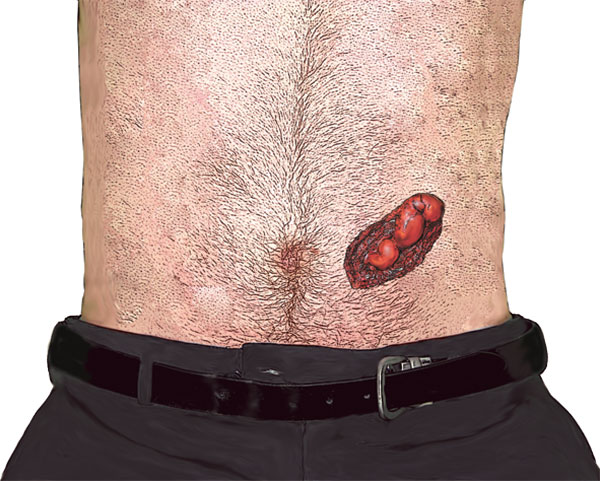
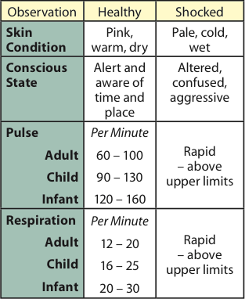
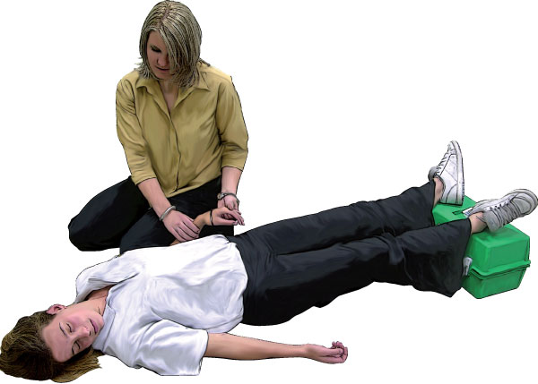

Shock
Shock
Shock is a life-threatening condition and should be treated as top priority, second only to attending to safety, an obstructed airway, absence of breathing, cardiac arrest or severe life threatening bleeding.
Shock is a deteriorating condition that does not allow a casualty to recover without active medical intervention.
Causes of shock
Loss of blood – this is the most common cause of shock. Blood loss may occur immediately or may be delayed. The blood loss could be either seen externally or internally within a particular system or organ.
The greater the loss of blood, the greater the chance of developing shock. A slow, steady loss of blood can also produce shock.
Abdominal emergencies – Burst appendix, perforated intestine or stomach, intestinal obstruction, pancreatitis.
Loss of body fluids – May be due to extensive burns, dehydration, severe vomiting or diarrhoea.
Heart attack – Failure of the heart to function due to an obstructed blood supply to the heart itself can produce shock.
Sepsis or toxicity – Discharge of toxins produced by bacteria in the blood stream can produce shock.
Spinal injury – Due to the injury and the reaction of the nervous system.
Crush injuries – Injuries following explosions, building collapses etc.
As a first aider attending a casualty, you should ask yourself the following:
Does the injury appear serious?
If I don’t do anything to help, is the casualty likely to become worse?
If the casualty’s condition worsens, is death a possibility?
If the answer to any of these questions is ‘YES!’, then you should treat for shock.


Signs and Symptoms
pale, cool, clammy skin
thirst
rapid, shallow breathing
rapid, weak pulse
nausea and/or vomiting
evidence of loss of body fluids, or high temperature if sepsis present
collapse and unconsciousness
progressive 'shutdown' of body's vital functions
Care and Treatment
call Triple Zero (000) for an ambulance
put on disposable gloves if available
control any bleeding
if conscious, lie the casualty down with legs elevated and bent at the knees
if unconscious, recovery position with support under the legs to elevate them
reassurance
maintain body temperature, but DO NOT overheat
treat any other injuries
